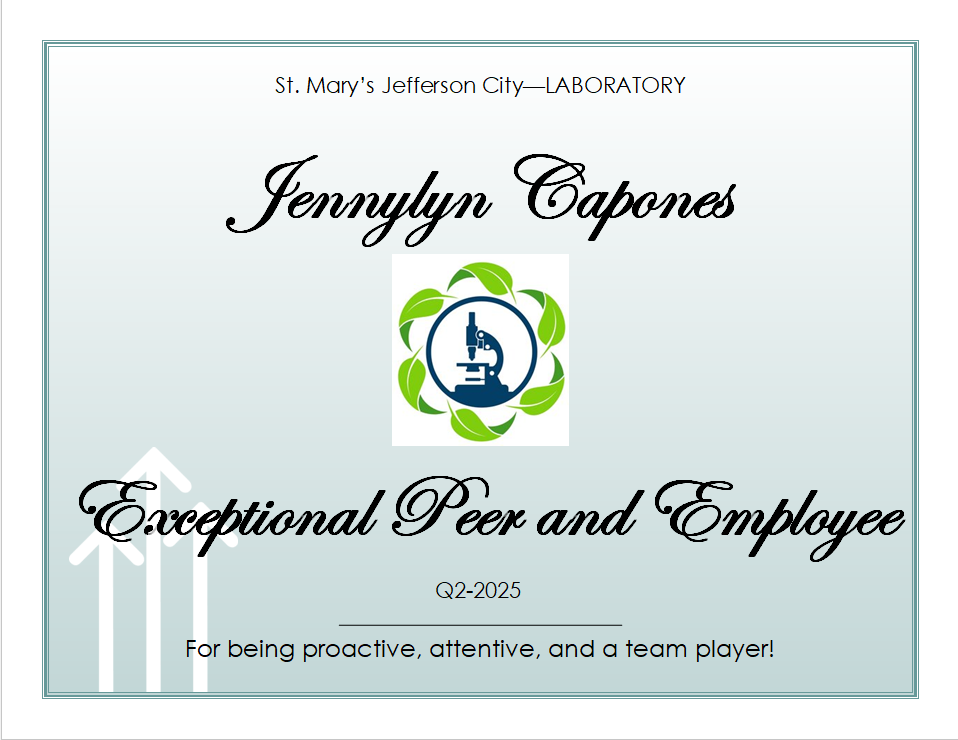
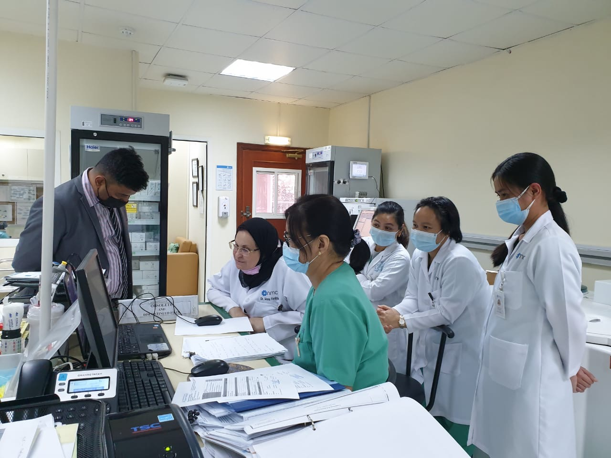

April 2021 - Present: Clinical Laboratory Scientist
- Management Health Systems LLC d/b/a MedPro International
- SSM Health St. Mary's Hospital Jefferson City, MO
I moved to the United States in 2021 through a healthcare agency called MedPro and began working as a contingent medical technologist at SSM Health St. Mary’s Hospital. After three years, I was offered a full-time position at the same hospital, which I gladly accepted. I continue to work as a generalist, rotating through core laboratory departments (Automated, Manuals, Blood Bank), but over time, I have discovered my strongest interests are Chemistry, Hematology, and Point-of-Care Testing (POCT). I have continued to grow and improve my technical skills with the guidance of my department leads and laboratory manager. I also signed up for the Clinical Ladder Program, which gives me a chance to lead small projects, join community events, take part in professional development, and many more activities.
Looking back, I see how all my past experiences, both local and international, have shaped how I connect with my team and care for patients. These experiences helped me understand the value of teamwork, growth and providing the best service we can. Inspired to keep learning, I decided to pursue further education, and I am now a graduate student while working full-time. It’s not always easy, but I’m proud of how far I have come and excited about what’s next.
Aug. 2019-April 2021: Medical Laboratory Technologist
- Cosmesurge & NMC Royal Medical Centre (Abu Dhabi, UAE)
In 2019, I started a new job at Cosmesurge & NMC Royal Medical Centre (formerly Cosmesurge and Emirates Clinics for One Day Surgery) as a generalist medical technologist, working in the same departments as before––Phlebotomy, Chemistry, Urinalysis, Basic Blood Bank, Serology, Immunology, and Microbiology. I handled monthly reports for some key performance indicators (KPIs) like turnaround time (TAT), glucometer (POCT) internal and external quality checks and comparison testing. When we switched to a new Laboratory Information System (LIS), I helped train other staff because I was already familiar with it.
I also helped organize and update important documents for CAP and ISO, especially during the COVID-19 pandemic when we only had virtual inspection. In this role, I learned how to stay flexible and professional, even when things get stressful or when working with different types of leaders. I was able to adjust quickly, help my team when they needed support, and speak up when I saw something that needed to be fixed. These experiences helped me grow more confident and aware of how I work with others.
July 2017-July 2019: Medical Laboratory Technologist
- New National Medical Centre LLC (Abu Dhabi, UAE)
In April 2017, I moved to Abu Dhabi, UAE and passed the country’s Department of Health (formerly HAAD) licensing exam to continue my career as a medical technologist. I worked as a generalist at NNMC, where I handled Phlebotomy, Chemistry, Urinalysis, Basic Blood Bank, Serology, Immunology and Microbiology. I was also in charge of the Microbiology Department where I helped organize compliance and regulatory documentation and made sure all our SOPs were updated and revised when needed. At that time, the laboratory was accredited by both CAP (College of American Pathologists) and ISO 15189:2012. One of the most important lessons I learned working abroad was how to work with people from different cultures and personalities. I saw how each person brought something new to the team, and I learned to adapt, communicate better, and grow both professionally and personally.
Feb. 2014-April 2017: Junior Medical Technologist
- Hi-Precision Diagnostics
After passing my licensing board exam in the Philippines to become a Registered Medical Technologist, I began my career as a Junior Medical Technologist at one of Hi-Precision Diagnostics branches. As a generalist, I gained hands-on experience across multiple laboratory disciplines including Urinalysis, Hematology, Serology, Chemistry, Immunology and processing of send out tests. I also earned certification as a Drug Testing Analyst, which added to my valuable credentials. In my last year at the lab, I moved into a quality assurance role where I was responsible for authorizing test results before they were sent to the medical records department. I was also responsible for keeping track of supplies and ordering what the lab needed. One of my proudest moments was my very first blood donation drive, in which my senior staff encouraged me to donate. This experience helped me get more involved in the community..
(Logo)Image source:Hi-Precision Diagnostics